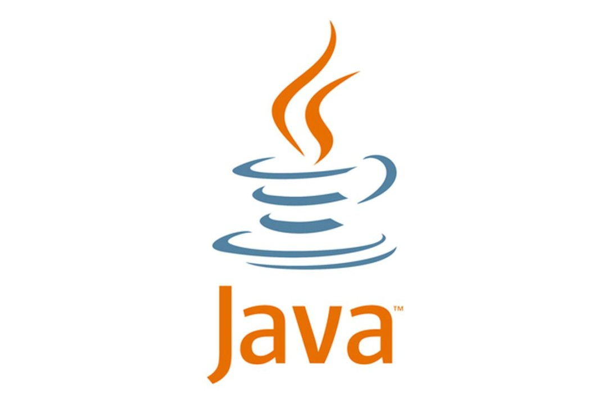

Java was created in the mid 90s as a programming language for the World Wide Web. It is an object oriented language and is very similar to C++ in appearance, however it differs in that it doesn’t have the ability to manipulate memory like C++. It is a very popular language because of its reliability and ability to be used to create anything. It also benefits from the Java Virtual Machine, which allows Java programs to be portable and run on any platform very easily. The Java programming language sees use in Game Development, Cloud Computing, Big Data, Artificial Intelligence, and its ability to connect to the internet through web applets. Because of Java’s wide use and reliability, it sees much community support along with many built in libraries and functions along with high quality development and test tools for developers.
